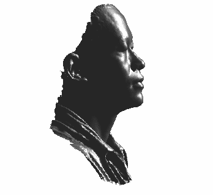

|
 |
Lin Zhang PhD, IEEE Senior Member |
|
Professor School of Software Engineering Tongji University 4800 Cao'An Highway, Shanghai, China Office: 408L, Jishi Building |
News:
Our paper "Linfei Li, Lin Zhang* et al., GS3LAM: Gaussian semantic splatting SLAM" has been accepted by ACMMM 2024
Our paper "Jin Zeng, Qingpeng Zhu, Tongxuan Tian, Wenxiu Sun, Lin Zhang et al., Deep Unrolled Weighted Graph Laplacian Regularization for Depth Completion" has been accepted by Int'l J. Computer Vision
Our paper "Zehao Yan, Lin Zhang* et al., IMU-assisted target-free extrinsic calibration of heterogeneous LiDARs based on continuous-time optimization" has been accepted by ICIP 2024
Our paper "Kaixin Chen, Lin Zhang* et al., Skeleton-aware Graph-based Adversarial Networks for Human Pose Estimation from Sparse IMUs" has been accepted by ACM Transactions on Multimedia Computing, Communications, and Applications
Our paper "Tianjun Zhang, Lin Zhang* et al., TES-CVIDS: A Transmission Efficient Sub-map Based Collaborative Dense VI-SLAM Framework" has been accepted by IEEE Transactions on Intelligent Vehicles
Our paper "Jiafeng Huang, Tianjun Zhang, Shengjie Zhao, Lin Zhang*, and Yicong Zhou, An Underwater Organism Image Dataset and A Lightweight Module Designed for Object Detection Networks" has been accepted by ACM Transactions on Multimedia Computing, Communications, and Applications
Quick Links to Our Representative Work:
GS3SLAM (a semantic SLAM framework, which models the scene as a semantic Gaussian field, ACM Multimedia 2024)
TES-CVIDS (a transmission efficient sub-map based collaborative dense VI-SLAM framework, IEEE T-IV 2024)
Ct-LVI (a framework towards continuous-time laser-visual-inertial Odometry and Mapping, IEEE T-CSVT 2024)
GLoc (a global localization approach in large-scale point clouds, IEEE T-CSVT 2024)
D-LIOM (a tightly-coupled direct LiDAR-inertial odometry and mapping framework, IEEE T-MM 2023)
WESNet (a weakly supervised network for extrinsic self-calibration of the surround-view system, IEEE T-MM 2023)
CVIDS (a collaborative localization and dense mapping framework for multi-agent based visual-inertial SLAM, IEEE T-IP 2022)
MOFISSLAM (a multi-object semantic SLAM system with front-view, inertial and surround-view sensors for indoor parking, IEEE T-CSVT 2022)
Simulation of Atmospheric Visibility Impairment (mathematical models and simulation strategies of several common atmospheric visibility degradation phenomena, IEEE T-IP 2021)
ROECS (a robust semi-direct pipeline towards online extrinsics correction of the surround-view system, ACM Multimedia 2021)
RefineDNet (a weakly supervised framework for single image dehazing, IEEE T-IP 2021)
VISSLAM (a tightly-coupled semantic SLAM system by integrating Visual, Inertial, and Surround-view sensors, for autonomous indoor parking, ACM Multimedia 2020)
BeDDE (a real-world benchmark dataset for evaluating dehazing methods, IEEE T-IP 2020)
ExCNet (an unsupervised-learning based ill-exposed image restoration method, ACM Multimedia 2019)
Vision-based Parking-slot Detection (IEEE T-IP 2018)
Contactless Palmprint Recognition (PR 2017)
LCKSVD_LHST (a 3D ear identification method, IEEE T-MM 2016)
CR_L2 (a method for 3D palmprint identification, IEEE T-PAMI 2015)
IL-NIQE (an NR-IQA method, IEEE T-IP 2015)
VSI (Visual Saliency Induced Index) (an FR-IQA method, IEEE T-IP 2014)
FSIM (Feature SIMilarity Index) (an FR-IQA method, IEEE T-IP 2011)
2024年3月，2023年度Elsevier（爱思唯尔）中国高被引学者
2024年1月，入选2023年度全球顶尖前10万名科学家（计算机科学与技术）
2024年1月，所主讲的《计算机视觉》入选上海高校市级一流本科课程，上海市教育委员会
2023年12月，入选高校计算机专业优秀教师奖励计划，教育部高等学校计算机类专业教学指导委员会，中国教师发展基金会
2023年11月，“单目目标检测与测距”获第八届全国计算机类课程实验教学案例设计竞赛一等奖，国家级实验教学示范中心联席会，中国计算机实践教育联合会
2023年10月，所主讲的《计算机视觉》入选上海高校市级重点课程，上海市教育委员会
2023年10月，入选全球前2%顶尖科学家榜单2023（World’s Top 2% Scientists 2023），爱思唯尔数据库
2023年6月，高等学校科学研究优秀成果奖（科学技术）技术发明一等奖（排名2），获奖项目“城市空间信息全域物联感知与三维建模关键技术及应用”， 中华人民共和国教育部
2023年6月，同济大学优秀毕业论文指导教师（学生：李林飞）
2023年4月，2022年度Elsevier（爱思唯尔）中国高被引学者
2023年1月，入选2022年度全球顶尖前10万名科学家（计算机科学与技术）
2022年10月，Best Editor Award, Journal of Visual Communication and Image Representation
2022年10月，“筑基建魂，二十年砥砺求索，新时代一流软件工程人才培养体系的构建与实践”获2022年上海市高等教育优秀教学成果二等奖（排名第三）
2022年4月，2021年度Elsevier（爱思唯尔）中国高被引学者
2021年11月，上海市曙光计划，上海市教育委员会
2020年，教育部长江学者奖励计划青年学者，中华人民共和国教育部
2020年，上海市科技进步一等奖（排名2），获奖项目“面向应急抢险与事故处理的数据高效传输与智能分析关键技术与应用”，上海市人民政府
2020年6月，同济大学优秀毕业论文指导教师（学生：陈泽徽）
2021年4月，2020年度Elsevier（爱思唯尔）中国高被引学者
2020年6月，“深化教学改革与创新，建设一流的软件工程专业基础和数字媒体课程群”获同济大学教学成果特等奖（排名第三，共14人），同济大学
2019年12月，首届芯创杯高校未来汽车人机交互设计大赛优秀指导教师，中国电子信息产业发展研究院
2019年11月，“CV之旅：环视系统构建及基于环视的泊车位检测”获第十八届全国软件与应用学术会议（NASAC2019）全国软件工程教学案例比赛一等奖（排名第一），中国计算机学会软件工程专业委员会、系统软件专业委员会
2019年10月，同济大学育才教育奖励金二等奖优秀教师，同济大学
2019年6月，同济大学优秀毕业论文指导教师（学生：张天骏、朱安琪）
2018年5月，“面向计算机视觉课程的综合实验平台”获同济大学校级教学成果三等奖（排名第一），同济大学
2017年9月，同济大学师德师风优秀教师提名奖，同济大学
2016年6月，同济大学优秀毕业论文指导教师（学生：张荔郡）
2013年7月，上海市浦江人才计划，上海市科学技术委员会
2013年6月，同济大学青年岗位能手，同济大学
2012年11月，同济大学铭创教育基金优秀教师奖，同济大学
Oct. 2013, Best Paper Award (Honorable Mention) for the paper "Lin Zhang et al., Online finger-knuckle-print verification for personal authentication, Pattern Recognition 43 (7) 2560-2571, 2010" in the journal Pattern Recognition
Oct. 2010, Silver Medal in the iENA (International Trade Fair for Ideas-Inventions-New Products) exhibition held at Nuremberg Germany for our system "Digital Image/ Video Quality Enhancement" (With Dr. Lei Zhang and Dr. Weisheng Dong)
Apr. 2010, The Most Promising Researcher, Dept. Computing, The Hong Kong Polytechnic University
Mar. 2008~Feb. 2011, Edward Sai Kim Hotung Scholarship, The Hong Kong Polytechnic University
2003年06月，优秀毕业论文，上海交通大学
2002年10月，第二轮选优考优秀生，上海交通大学
1. Fall 2024, Computer Vision
2. Fall 2024, Machine Learning
Academic Activities: Back to top
中国计算机学会杰出会员
IEEE Senior Member
中国计算机学会（CCF）计算机视觉专业委员会委员
中国图象图形学学会机器视觉专业委员会委员
中国计算机学会传播大使
视觉与学习青年研讨会（VALSE）资深领域主席（Senior Area Chair）
IEEE Robotics and Automation Letters编委（Associate Editor）
Journal of Visual Communication and Image Representation编委（Associate Editor）
中国高校产学研创新基金“异构传感器配置无人机集群系统的协同感知技术”（2021ZYA08003），2022.7~2023.12，主持人，教育部高等学校科学研究发展中心
国家自然科学基金面上项目“面向室内环境自主泊车任务的定位与建图关键技术研究”（62272343），2023.01~2026.12，主持人
上海市教育委员会曙光计划项目“紧耦合多源传感器语义建图关键技术研究”（ 21SG23），2021.10~2014.10
同济大学学科交叉联合攻关首批示范重点项目“面向韧性城市智能规划的多智能体动态监测、虚拟建模及模拟推演”，2021.08~2022.07，主持人
国家重点研发计划重点专项"物联网与智慧城市关键技术及示范"课题"城市韧性的在线跨尺度虚实融合模拟/预测/推演技术"（2020YFB2103903），2020.10~2023.9，主持人
上海市“科技创新行动计划”港澳台科技合作项目“面向室内泊车环境的多源传感器建图理论与关键技术”（20510760400），2020.10~2023.9，主持人
国家自然科学基金面上项目“基于视觉的泊车位检测技术中关键问题的研究”（61973235），2020.01~2023.12，主持人
国家自然科学基金重点项目“面向海洋鱼类识别的视觉数据智能分析理论与关键技术”（61936014），2020.01~2024.12，课题主持人
腾讯科技（上海）有限公司项目“面向智能手机的掌纹识别算法与系统”, 2019.10~2020.06，主持人
华为技术有限公司项目“环视泊车位检测系统及其关键技术研究”, 2019.04~2020.04，主持人
2017中央高校基本科研业务费-学科交叉类项目“面向无人驾驶平台的视觉感知”，2017.09~2019.08，主持人
上海汽车工业科技发展基金会项目“基于深度神经网络的泊车位识别与人车识别”，2017.10~2018.12，主持人
上海市科学技术委员会高新技术领域项目，面向“最后一公里”的智能驾驶关键理论及应用（17DZ1100202.），2017.07~2019.06，二级课题主持人
国家自然科学基金面上项目“基于深度神经网络的图像中雾霾的度量与去除”（61672380），2017.01~2020.12，主持人
中兴通讯产学研合作项目“面向手机Camera的图像质量评测研究”，2016.09~2017.12，主持人
上海市经济和信息化委员会产学研合作项目“智能化裂隙灯显微镜及图像处理系统”（沪CXY-2014-016），2014.06~2016.06，主持人
CCF-腾讯犀牛鸟科研基金项目“基于智能手机和云计算平台的多生物特征融合”（CCF-Tencent RAGR20150112），2015.10～2016.10，主持人
上海市浦江人才计划项目"非接触式掌纹掌脉识别系统的研究与开发"（13PJ1408700），2013.09.01~2015.08.01，主持人
国家自然科学基金青年科学基金项目“基于视觉显著性和稀疏表示的图像质量评价”（61201394），2013.01～2015.12，主持人
Graduates with outstanding academic performance: Back to top
2020级博士生（在读）， 陈阳，优秀博士奖学金，同济大学优秀博士研究生
2019级博士生（在读），张天骏，光华奖学金，博士研究生国家奖学金，同济大学优秀博士研究生
2024届博士毕业生 （入职上海交通大学自动化系博士后），王忠，联合电子奖学金，中交二公院志业精英奖学金，优秀博士奖学金
2024届硕士毕业生，张峰溢，硕士研究生国家奖学金
2023届硕士研究生，郭超政，2020年奥比中光“3D视觉创新应用（三维重建）竞赛”二等奖
2022届硕士毕业生，陈钧涛，博世奖学金，上海市“明日科技之星”科创竞赛特等奖（排名2）
2022届硕士毕业生，朱安琪，2020年度、2021年度二度硕士研究生国家奖学金，上海市“明日科技之星”科创竞赛特等奖（排名1），同济大学优秀研究生，上海市优秀毕业研究生
2022届博士毕业生 （入职东华大学），邵玄，博士研究生国家奖学金，博世奖学金，优秀博士奖学金，同济大学优秀博士研究生，上海市科委扬帆计划
2021届硕士毕业生，张映艺，硕士研究生国家奖学金，同济大学优秀毕业研究生
2020届硕士毕业生，黄君豪，硕士研究生国家奖学金，上海市优秀毕业研究生，同济大学优秀硕士毕业论文
2020届硕士毕业生，赵世雨，硕士研究生国家奖学金，上海市优秀毕业研究生，同济大学优秀硕士毕业论文
2020届硕士毕业生，朱西宁，华特奖学金，同济大学优秀硕士毕业论文
2019届硕士毕业生，李曦媛，硕士研究生国家奖学金，上海市优秀毕业研究生，同济大学优秀硕士毕业论文
2019届硕士毕业生，张荔郡，硕士研究生国家奖学金，上海市优秀毕业研究生，同济大学优秀硕士毕业论文
2019届硕士毕业生，朱雅梅，同济大学校级研究生优秀奖学金
2019届硕士毕业生，程载熙，华为奖学金
2018届硕士毕业生，李林申，硕士研究生国家奖学金
2016届硕士毕业生，梁青君，光华奖学金
2016届硕士毕业生，李力达，硕士研究生国家奖学金，上海市优秀毕业研究生
2015届硕士毕业生，顾中一，硕士研究生国家奖学金
2015届硕士毕业生，丁志轩，硕士研究生国家奖学金，同济大学学术先锋
Created on Mar. 28, 2010
Last update on July 30, 2024